Sobre el Sitio Web
Este sitio web nació de la pasión de mi padre por el remo y los kayaks, una pasión que siempre ha querido transmitir con la familia y amigos. Con este sitio, busque no solo ofrecer productos, sino también transmitir esa misma emoción y amor por los deportes acuáticos.
Filosofía de Diseño
Desde el inicio del proceso de diseño, mi intención fue que el sitio reflejara los valores y lo que intenta transmitir la marca Perico Kayaks: calidad, accesibilidad y sostenibilidad. Utilice una paleta cromática que evoca la frescura del agua y la naturaleza, junto con una tipografía moderna que facilita la lectura. Yo queria que el diseño sea entendible y accesible para todos.
Experiencia del Usuario
El sitio fue pensado para que los visitantes puedan navegar fácilmente por nuestras ofertas de productos, encontrar información relevante sobre kayaking. Además, integre secciones informativas, testimonios de usuarios y guías útiles para mejorar la experiencia del usuario.
Objetivos del Sitio
- Proporcionar información clara y accesible sobre nuestros productos.
- Fomentar una comunidad de entusiastas del kayaking.
- Ofrecer recursos y guías que ayuden a los usuarios a disfrutar de su experiencia en el agua.
Mapa del Sitio
Explora la estructura completa de nuestro sitio web en el siguiente mapa visual:
Wireframes
A continuación los wireframes de las diferentes secciones del sitio:
Página de Inicio.
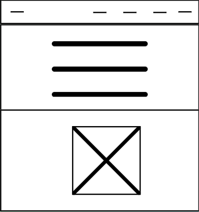
Página de Productos y Nuestra Historia.
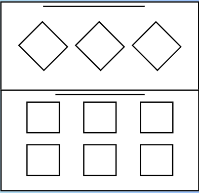
Página de Información de Interés, Contacto y Testimonios.
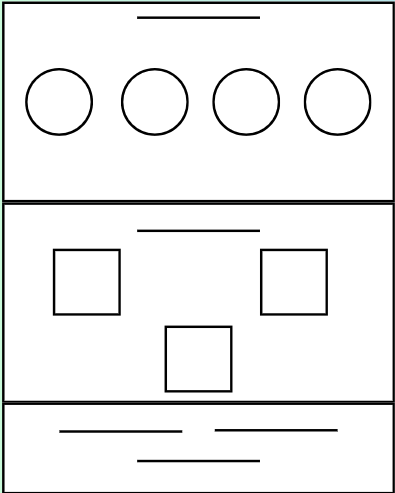
Página de inicio para dispositivos moviles.
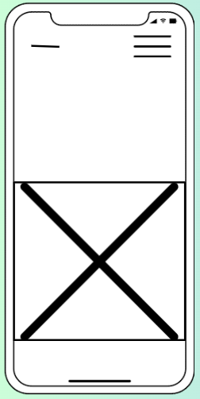
Página "Nuestra historia" para dispositivos moviles.
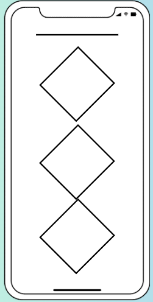
Página "Nuestros productos" para dispositivos moviles.
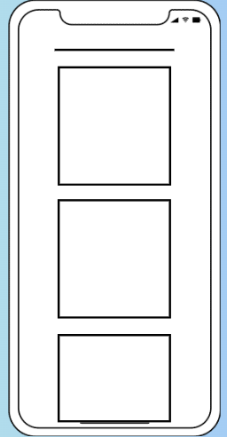
Página de testimonios y contacto para dispositivos moviles.
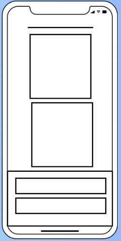
Diseño: Paleta Cromática y Tipografía
Paleta Cromática
Colores de texto:
#181817: Usado en el logo y en algunos textos de encabezado, enlaces de menú, párrafos y algunos textos secundarios.
#fffdfc: Utilizado en varios textos, especialmente sobre fondos oscuros.
Colores de fondo y bordes:
#b4b4b4: Fondo en la barra de navegación móvil.
#007bff: Usado en el botón "Volver arriba" y al hacer hover.
#28a745: Utilizado en el botón "Checkout".
Tipografía
Fuente: Poppins (varios grosores: 400, 500, 600, 700 y 800)
Estilo general: Sans-serif, limpia y moderna para dar una apariencia accesible y profesional
¿Cómo terminó quedando la página?
Página de Inicio
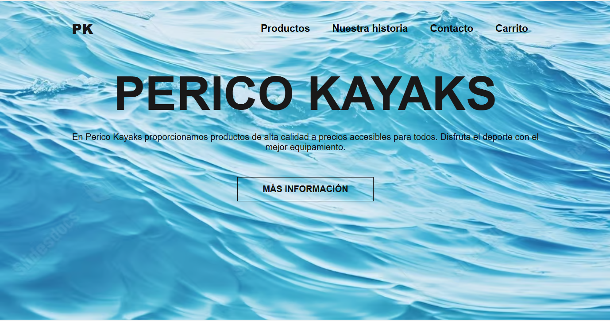
Página de Productos y Nuestra Historia
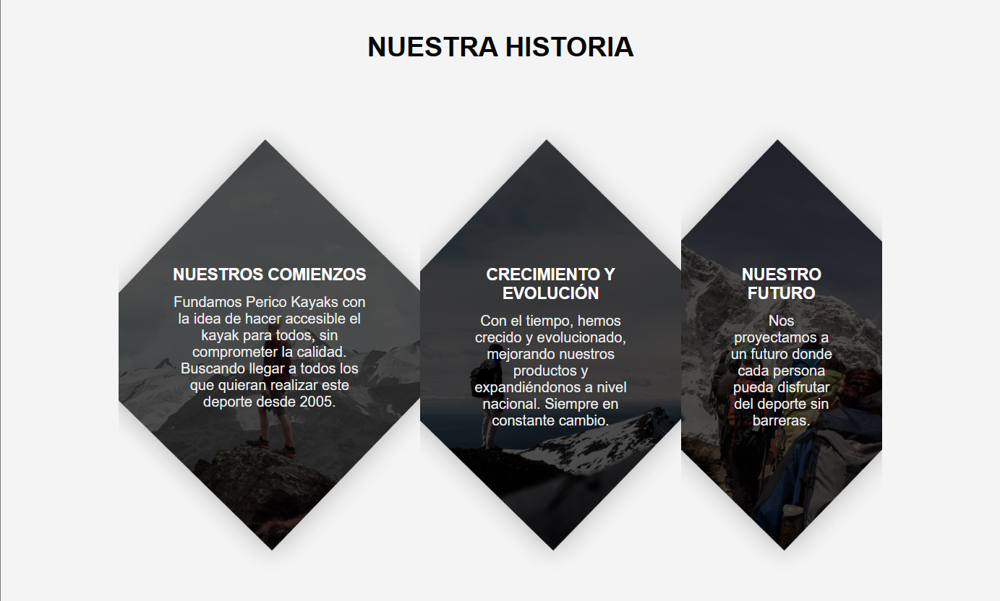

Página de Información de Interés.
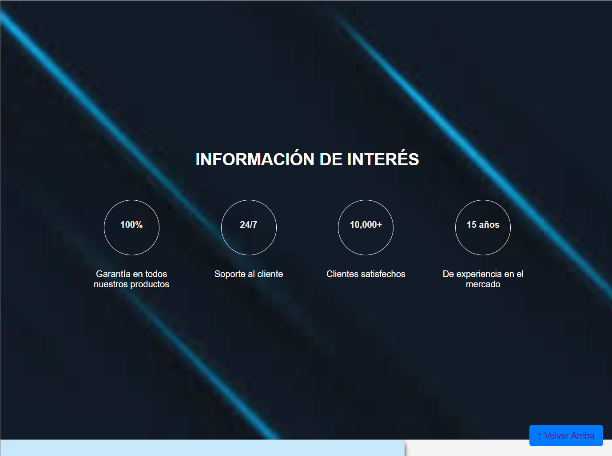
Página de Información de Testimonios.
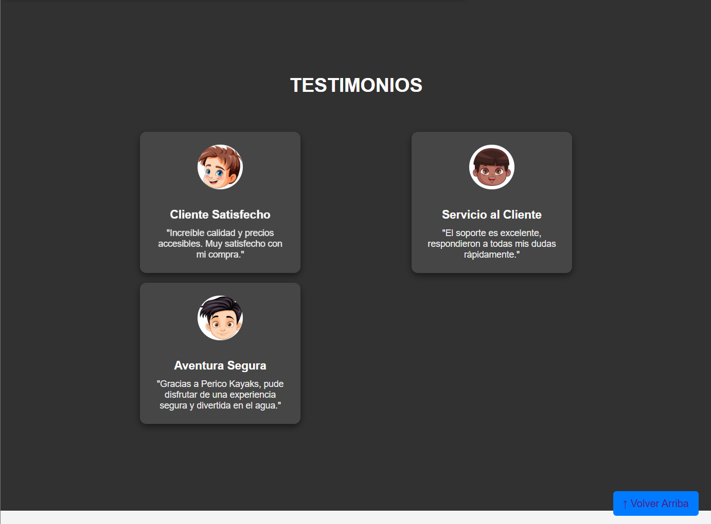
Página de Información de Contacto.
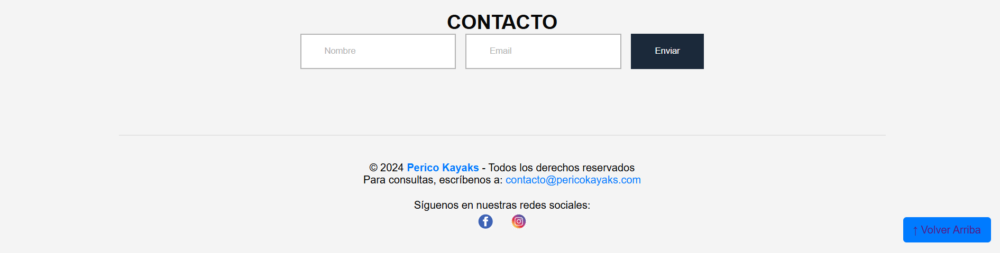